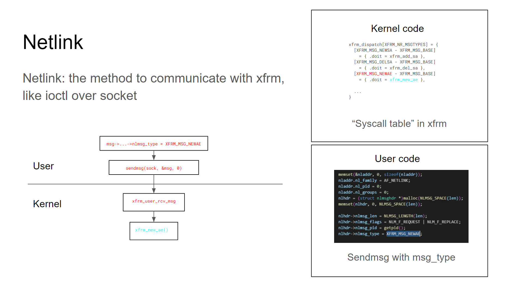
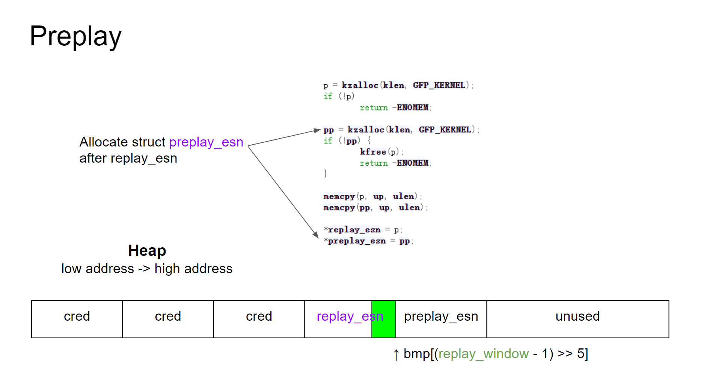
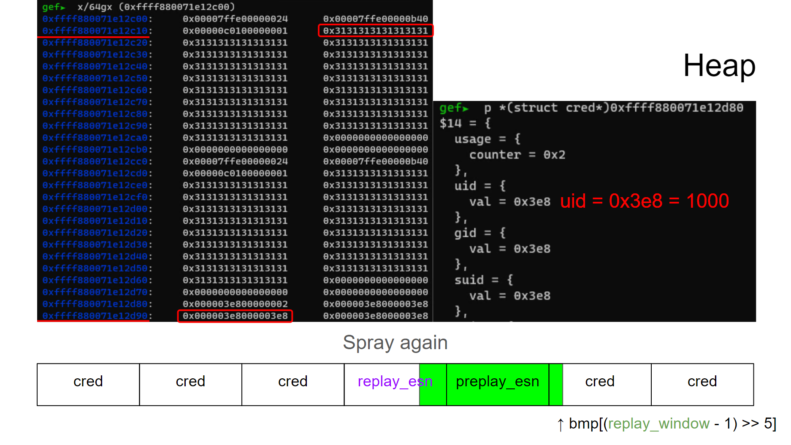
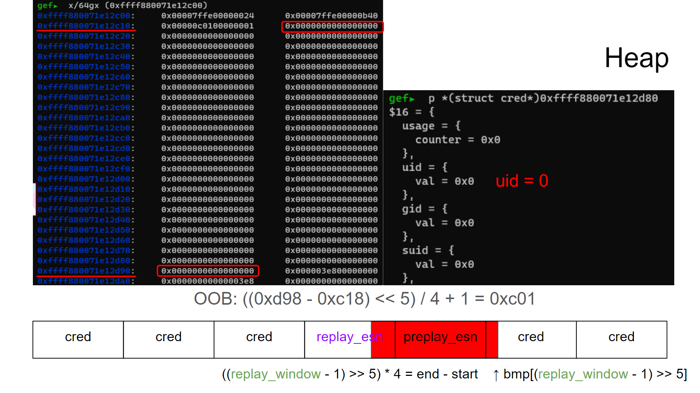

CVE-2017-7184 分析 & 复现
Introduction
本漏洞产生的原因是 Kernel 版本 <4.10.6 的 XFRM 模块中存在一段越界写，使得攻击者可以覆盖 cred 中的值从而本地提权。
XFRM
XFRM (transform) 是 Linux 中实现 IPsec 协议的模块。
IPsec
IPSec是通过分组加密认证来保护IP协议的一类协议，主要包含认证头 (Authentication Header，AH)、封装安全载荷 (Encapsulating Security Payload，ESP) 和网络密钥交换 (Internet Key Exchange, IKE)。其中 AH 和 ESP 都需要用到安全协商 / 安全关联 (Security Associstion, SA)。SA 一般定义了 IPsec 双方的 IP 地址、IPsec 协议、加密算法、密钥、模式、抗重放窗口等。
NetLink
对于 XFRM 模块，用户和内核的交互是由 NetLink
来实现的。如果不深究细节的话我觉得可以把 NetLink 简单的理解成 ioctl over
socket。用户将想要调用的函数对应的常数设置为nlmsg_type然后将msg发送到
kernel，XFRM
收到消息后会根据nlmsg_type来调用对应的函数。下图是调用xfrm_new_ae的一个例子:

Vulnerability
XFRM 模块用xfrm_state结构来保存
SA，xfrm_state中存在一个变长结构体xfrm_replay_state_esn
1
2
3
4
5
6
7
8
9struct xfrm_replay_state_esn {
unsigned int bmp_len;
__u32 oseq;
__u32 seq;
__u32 oseq_hi;
__u32 seq_hi;
__u32 replay_window;
__u32 bmp[0];
};bmp_len表示bmp数组的长度，replay_window表示bmp的索引范围。这个结构体由xfrm_add_sa函数初始化，具体调用顺序为xfrm_add_sa() -> xfrm_state_construct() -> xfrm_alloc_replay_state_esn() / xfrm_update_ae_params()，除此之外xfrm_new_ae函数也会调用xfrm_update_ae_params()来更新xfrm_replay_state_esn。
1
2
3
4
5
6
7
8
9
10
11
12
13
14
15
16
17static void xfrm_update_ae_params(struct xfrm_state *x, struct nlattr **attrs,
int update_esn)
{
...
struct nlattr *re = update_esn ? attrs[XFRMA_REPLAY_ESN_VAL] : NULL;
...
if (re) {
struct xfrm_replay_state_esn *replay_esn;
replay_esn = nla_data(re);
memcpy(x->replay_esn, replay_esn,
xfrm_replay_state_esn_len(replay_esn));
memcpy(x->preplay_esn, replay_esn,
xfrm_replay_state_esn_len(replay_esn));
}
...
}xfrm_update_ae_params()的代码可以发现这个函数可以将来自用户空间的数据复制到replay_esn当中。
在xfrm_new_ae()的代码中可以看到其在调用xfrm_update_ae_params()更新
esn
之前先调用了xfrm_replay_verify_len()做了一个检查，如果检查通过就更新
esn。 1
2
3
4
5
6
7
8
9
10
11
12
13
14
15
16
17
18
19
20
21
22
23static int xfrm_new_ae(struct sk_buff *skb, struct nlmsghdr *nlh,
struct nlattr **attrs)
{
struct net *net = sock_net(skb->sk);
struct xfrm_state *x;
struct km_event c;
int err = -EINVAL;
...
struct nlattr *re = attrs[XFRMA_REPLAY_ESN_VAL];
...
err = xfrm_replay_verify_len(x->replay_esn, re);
if (err)
goto out;
spin_lock_bh(&x->lock);
xfrm_update_ae_params(x, attrs, 1);
spin_unlock_bh(&x->lock);
...
out:
xfrm_state_put(x);
return err;
}
但是在xfrm_replay_verify_len()当中并没有对 replay_window
的检测，这就导致了数组越界的问题。
通过分析对于replay_window的操作可以发现这里的数据越界在xfrm_replay_advance_esn()中可以被攻击者用于一段区间置零或者
1bit 写。
有兴趣详细了解以上代码的选手可以翻阅:
Exploit
首先fork大量进程来往堆上喷射大量cred结构体，这些进程很快退出，在kmem_cache上留下大量
free
chunk。通过调试可以发现本内核的cred_jar是kmalloc-192。由于
SLUB 的特性，如果此时我们申请大小为 128 到 192
的xfrm_replay_state_esn结构，其就很有可能和之后分配的cred相邻。
所以我们紧接着调用xfrm_add_sa()分配xfrm_replay_state_esn结构体并调用xfrm_new_ae()来修改replay_window使其越界。
然后再往堆上大量喷射cred结构体。
此时我们触发
OOB，这样xfrm_replay_advance_esn()就能越界写到cred中的uid等字段从而提权。
Debug Details
在前面分配replay_esn的时候会伴生一个preplay_esn，后者虽然没什么用但是会影响堆结构。分配完之后堆结构大概是这样：

图中绿色区域就是bmp[(replay_window - 1) >> 5]能索引到的范围，因为我们还没有修改replay_window，所以此时的索引范围是合法的。
在触发xfrm_new_ae()来修改replay_window再喷射大量cred之后，我们的堆结构变成了这样:

在左边的内存窗口中可以看到堆上连续排布的replay_esn,
preplay_esn和cred结构体，此时bmp[(replay_window - 1) >> 5]已经越界并可以改到cred的头部的uid等字段。下面触发
OOB 验证前面的分析：

可以看到原本的绿色区域被置零，这里用红色标记。原本cred头部存放的uid等均被修改为
0，拿到 root。
Reproducing Environment (for WSL)
Compile linux-4.4.20
edit makefile: add -fno-pie
1 | KBUILD_CFLAGS := -Wall -Wundef -Wstrict-prototypes -Wno-trigraphs \ |
启用一些 config (也可以像我一样直接抄ET的作业
1 | CONFIG_INET_AH=y |
1 | make |
Image 使用 syzkaller 创建 1
2
3wget https://raw.githubusercontent.com/google/syzkaller/master/tools/create-image.sh -O create-image.sh
chmod +x create-image.sh
./create-image.sh
qemu 启动 1
2
3
4
5
6
7
8qemu-system-x86_64 \
-m 2048 \
-gdb tcp::1234 \
-net nic -net user,hostfwd=tcp:127.0.0.1:2222-:22 \
-display none -serial stdio -no-reboot \
-hda ./stretch.img \
-kernel ./bzImage \
-append "root=/dev/sda console=ttyS0"
如果虚拟机网卡不是
eth0，比如我执行dmesg | grep -i eth0发现enp0s3: renamed from eth0，运行sed -i 's/eth0/enp0s3/g' /etc/network/interfaces替换即可。